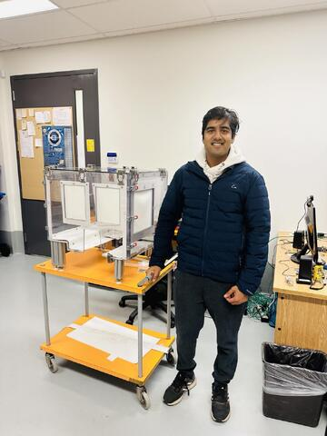

Requirements
Create a controlled incubation environment capable of supporting live-cell growth while maintaining full microscope access for long-duration imaging experiments.
Integration Mockups
Before committing to final support hardware, early fit-check prototypes were used to validate enclosure dimensions, microscope clearance, sample access, and likely mounting locations around the existing microscope geometry.
Environmental Control Development
The control strategy combined heater integration, CO2 routing, and regulation hardware so the chamber could maintain cell-culture conditions without interfering with imaging workflows.
Microscope Integration
The enclosure was developed around microscope constraints, preserving optical access and sample accessibility while creating a controlled local environment around the stage.
Environmental Chamber for Live Cell Imaging
The final chamber provided a microscope-integrated incubation environment with transparent access panels, latching hardware, controlled air heating, CO2 regulation, and modular access for maintenance and experiments.

Early Integration Mockup
Polycarbonate panels were temporarily supported using stacked pipette-tip boxes to evaluate enclosure geometry, microscope clearance, access requirements, and future mounting locations before fabrication of the final support structure.

Heater and CO2 Regulation Development
Control hardware and routing components were evaluated to integrate chamber heating, CO2 delivery, and environmental regulation into the microscope-mounted enclosure.